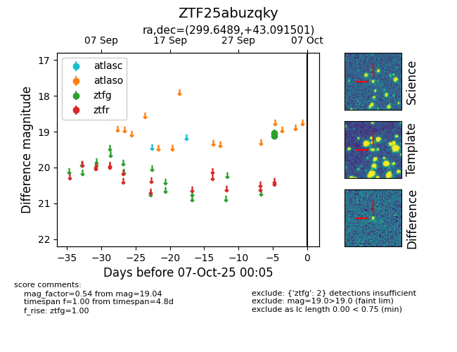

FINK: ZTF25abuzqky
Lasair: ZTF25abuzqky
ALeRCE: ZTF25abuzqky
ZTF25abuzqky (ztf,fink)
equatorial (ra, dec) = (299.6489,+43.09150)
galactic (l, b) = (78.1385,+7.11022)

last ztfg=19.04
2 ztfg detections